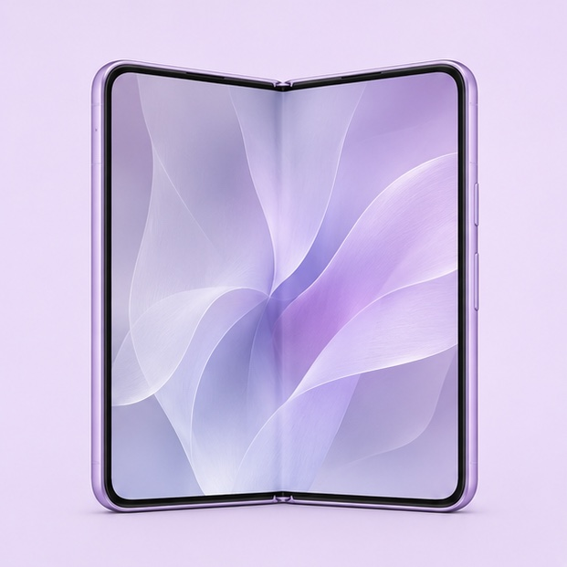
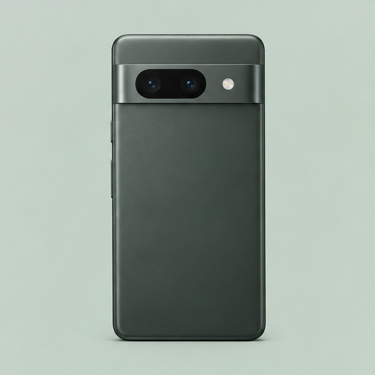
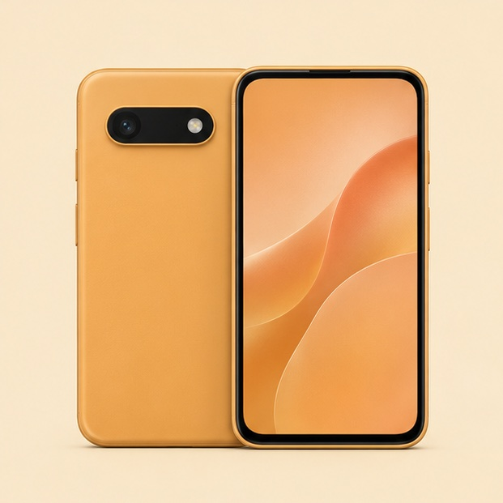
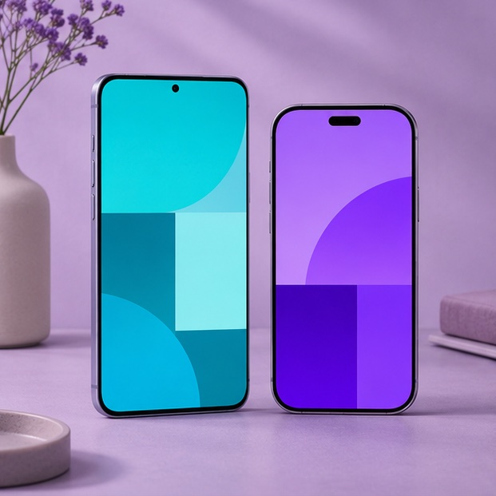
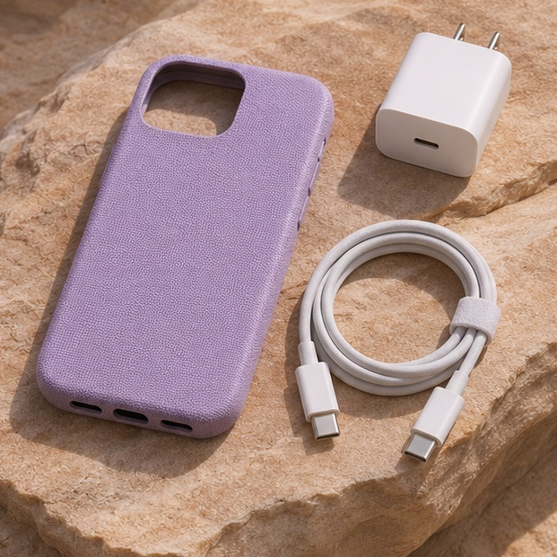
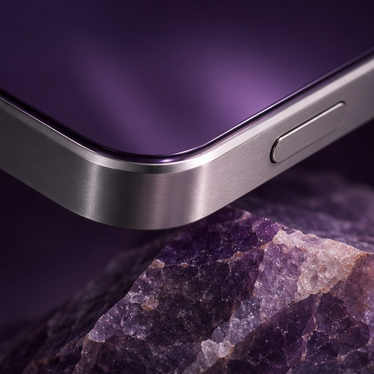
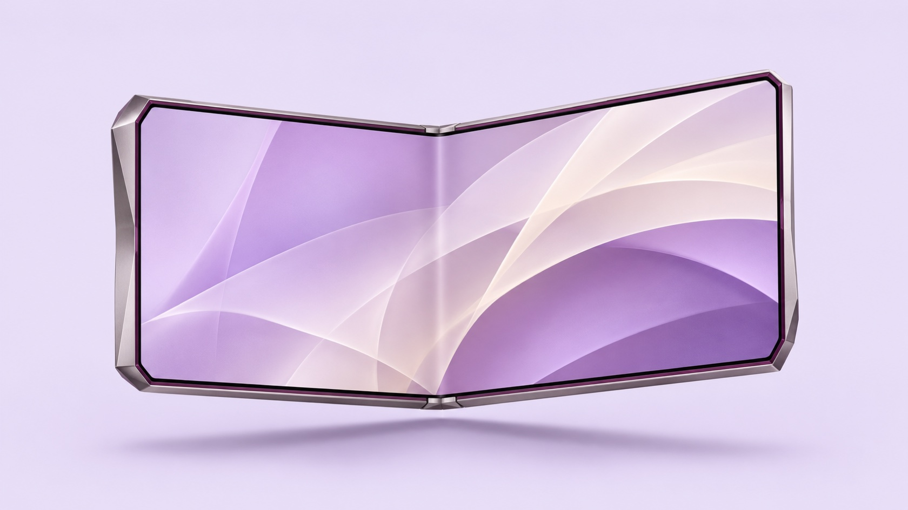
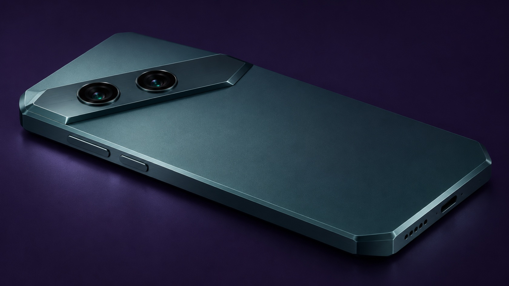
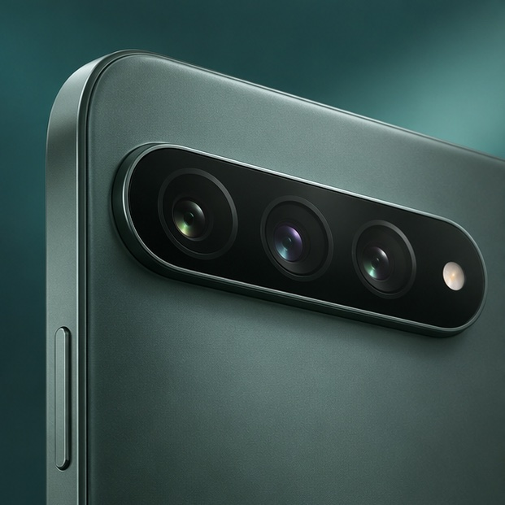

펼치면 넓어지는 작업 공간.

렌즈에서 시작하는 새로운 시선.

쓰던 자료를 옮길 준비.
손에 닿는 부분부터.

장면마다 다른 구도.
휴대와 충전 준비.
기존 기기의 사진과 연락처가 백업되어 있는지 확인하세요.
사진, 연락처, 문서 중 새 기기에서 필요한 항목을 골라 정리하세요.
새 기기에서 사용할 계정과 복구 수단을 확인하세요.
접이식 대화면과 한 손에 들어오는 바형을 비교해 보세요.
모델마다 금속 프레임과 색상 구성이 다릅니다.
케이스를 씌웠을 때 두께와 사용감을 함께 고려하세요.
넓게 이어지는 풍경과 여러 사람이 있는 구도를 담는 렌즈입니다.
멀리 있는 피사체가 화면에서 차지하는 크기를 조절합니다.
제품 비교 화면에서 모델별 렌즈 구성을 확인할 수 있습니다.
구성할 모델과 맞는 크기를 먼저 확인하세요.
케이블 단자와 전원 어댑터 조건을 확인하세요.
외출에 필요한 케이블과 어댑터만 골라 함께 보관하세요.
가벼운 손끝으로 하루를.
필요한 기능을 한 손에.
모델에 맞는 보호와 충전 구성을 확인하세요.